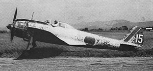
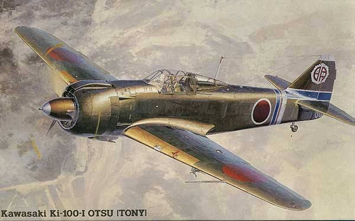
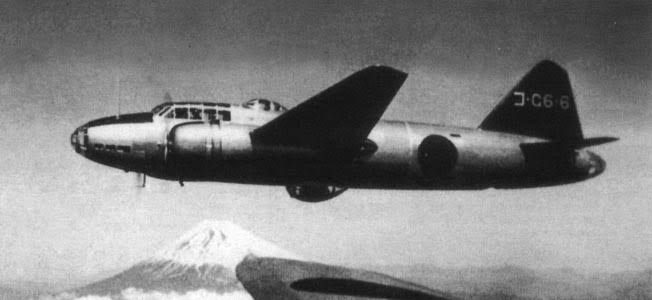
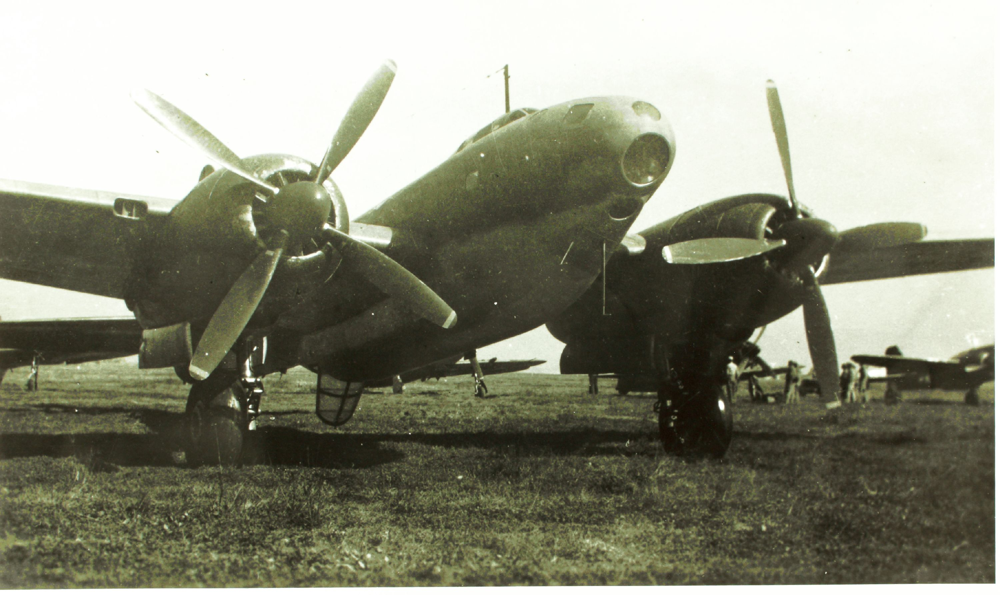
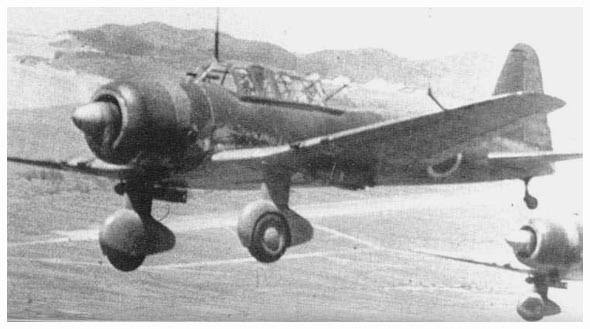
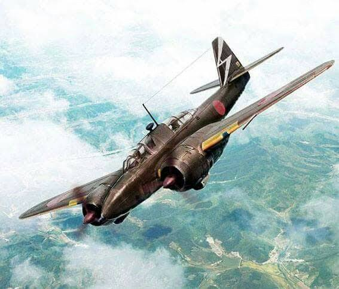
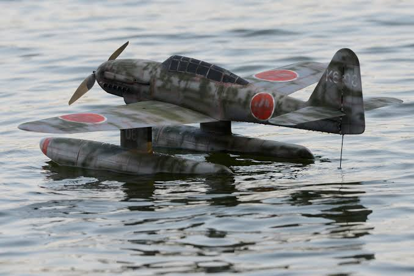
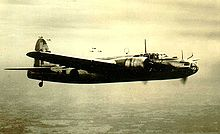
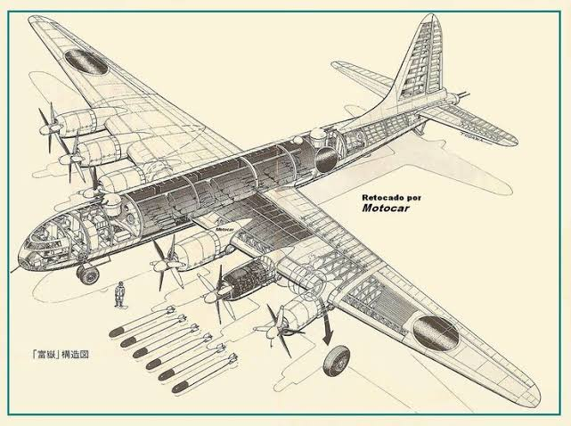

Nakajima Ki-43
Nakajima Ki-43 atau biasa disebut Hayabusa merupakan pesawat tempur berbasis darat yang digunakan oleh Pasukan Udara Angkatan Darat Kekaisaran Jepang selama Perang Dunia II. Hayabusa juga dipakai oleh Manchukuo serta Thailand saat itu. Sekutu menyebutnya dengan sebutan "Oscar" atau "Army Zero" (karena mirip dengan Mitsubishi A6M Zero). Pilot sekutu menyebutkan bahwa pesawat ini merupakan target yang sulit ditembak, akan tetapi mudah terbakar atau rusak setelah beberapa tembakan. Namun, pesawat ini dikenal sebagai legenda pada awal-awal perang karena pesawat tipe ini menembak jatuh pesawat Sekutu lebih banyak dibanding pesawat tempur milik Pasukan Udara Angkatan Darat Kekaisaran Jepang yang lain. Hayabusa diproduksi sebanyak 5.919 buah dan sebagian besar digunakan dalam operasi Kamikaze pada akhir perang.

Kawasaki Ki-100
Kawasaki Ki-100 adalah pesawat tempur yang digunakan oleh Tentara Kekaisaran Jepang dalam Perang Dunia II. Penunjukan Tentara Jepang adalah "Tipe 5 Fighter". Tidak ada kode nama Sekutu ditugaskan untuk jenis ini, meskipun mungkin telah salah diidentifikasi sebagai Tony karena profil yang sama dan penampilan. Misi operasional dimulai pada Maret 1945. Dari keterlibatan pertama, Ki-100 dilakukan baik terhadap B-29 dan menunjukkan dirinya untuk menjadi sama-sama efektif terhadap pejuang pembawa US Navy. Sebuah varian baru, Ki-100-Ib, diproduksi selama minggu-minggu terakhir dari perang di waktu untuk melengkapi lima sentai untuk tugas-tugas pertahanan. Dinamakan ulang Ki-100, prototipe pertama melakukan penerbangan perdananya pada tanggal 1 Februari 1945. Setelah program uji terbang yang dipercepat dan sangat berhasil, 272 badan pesawat yang disimpan dibangun kembali dengan standar Ki-100-1a antara Februari dan Juni 1945 dan mulai digunakan sebagai pesawat tempur Tipe 5 Angkatan Darat. Sebanyak 118 badan pesawat baru dengan kanopi gelembung yang diberi nama Ki-100-1b diproduksi sebelum Jepang menyerah. Mudah bermanuver, tangguh, bersenjata lengkap, dan dapat diandalkan, pilot Sekutu menganggap Ki-100 sebagai lawan yang tangguh. Hanya pesawat ini yang mampu bertahan.

Mitshubishi G4M
Pesawat serang berbasis darat tipe 1 adalah pesawat bomber darat utama bermesin ganda, yang digunakan oleh Dinas Udara Angkatan Laut Kekaisaran Jepang pada Perang Dunia II. Pihak Sekutu memberi G4M nama pelaporan Betty. Pilot Angkatan Laut Jepang menyebutnya Hamaki karena bentuknya yang silinder. G4M memiliki kinerja yang sangat baik, terutama dalam hal jangkauan, yang dapat dicapai dengan strukturnya yang ringan dan nyaris tidak adanya perlindungan bagi awaknya, tanpa armor plating atau tangki bahan bakar diri menyegel. Kelalaian ini terbukti menjadi kelemahan saat berhadapan dengan pesawat tempur Amerika selama Perang Pasifik.
Persenjataan defensif terdiri dari tiga senapan mesin 7,7 mm. Versi awal mampu mencapai kecepatan maksimum 188 knot dan memiliki jangkauan luar biasa lebih dari 2.200 mil—peningkatan di kemudian hari dalam perang memperluas keduanya secara signifikan. Meskipun utamanya merupakan pembom tingkat tinggi, G3M diadaptasi untuk membawa torpedo seberat 800 kg dalam peran antikapal. G3M kurang dikenal di Barat, terutama digunakan oleh Jepang untuk melawan Tiongkok, meskipun mereka mencapai perbedaan penting pada tanggal 14 Agustus 1937, ketika pasukan mereka yang berbasis di Formosa menyerang target di daratan Tiongkok sejauh 1.250 mil, sehingga mewujudkan serangan udara lintas samudra pertama dalam sejarah.

Tachikawa Ki-74
Tachikawa Ki-74 adalah pesawat pengebom pengintai jarak jauh eksperimental Jepang pada Perang Dunia II . Pesawat monoplane bermesin ganda dan bersayap tengah ini dikembangkan untuk Angkatan Udara Kekaisaran Jepang tetapi tidak pernah dikerahkan dalam pertempuran. Ki-74 dirancang untuk operasi ketinggian tinggi dengan kabin bertekanan untuk awaknya.
Meskipun sudah dirancang pada tahun 1939 sebagai pesawat pengintai jarak jauh yang mampu mencapai sebelah barat Danau Baikal ketika beroperasi dari pangkalan di Manchukuo ( Manchuria ), prototipe awal Ki-74 hanya pertama terbang paling lambat pada Maret 1944, setelah pengembangan dan persyaratan misi utamanya telah diubah menjadi kemampuan pengeboman dan pengintaian di daratan Amerika Serikat .Pesawat ini didukung oleh dua mesin radial Mitsubishi Ha-211-I, 1.641 kW (2.201 hp). Dua prototipe berikutnya didukung oleh Mitsubishi Ha-211-I Ru turbo-supercharged.

Mitshubishi Ki-51
Mitshubishi Ki-51 adalah sebuah bomber / dive bomber ringan yang melayani Tentara Kekaisaran Jepang selama Perang Dunia II.Pesawat Ini pertama kali terbang pada pertengahan 1939. Awalnya digunakan melawan pasukan Cina, itu terbukti menjadi terlalu lambat untuk menahan melawan pesawat tempur dari kekuatan Sekutu lainnya. Namun, melakukan peran-serangan darat berguna dalam teater Cina-Burma-India, terutama dari lapangan udara yang terlalu kasar bagi banyak pesawat lainnya. Mereka mulai digunakan dalam serangan kamikaze. Total produksi sekitar 2.385 unit.

Kawasaki Ki-102
Kawasaki Ki-102 adalah pesawat tempur Jepang Perang Dunia II yang bermesin ganda, dua kursi, tempur berat jangka panjang dikembangkan untuk menggantikan Ki-45 Toryu. Tiga versi direncanakan: tempur siang Ki-102 Ko, Ki-102 Otsu sebagai pesawat serangan darat dan tempur malam Ki-102 Hei. Dikembangkan dan diproduksi oleh Kawasaki Kokuki KK, Kepala desainernya adalah Takeo Doi dan Takeshi Nemoto. Pelaporan nama Sekutu pesawat ini adalah "Randy".
Secara struktural, pesawat tempur serang Ki-102 merupakan monoplane yang seluruhnya terbuat dari logam. Sayapnya terdiri dari dua tiang. Di konsol luar, di antara anggota samping, terdapat dua tangki bahan bakar tertutup yang masing-masing berkapasitas 170 liter. Dua tangki lagi yang masing-masing berkapasitas 285 liter ditempatkan di bagian tengah juga di antara anggota samping. Di tepi depan bagian tengah, terdapat juga tangki berkapasitas 80 liter. Tangki utama berkapasitas 720 liter terletak di badan pesawat antara kokpit pilot dan penembak. Di kedua sisi tangki, dua pelat baja setebal 12 mm dipasang pada tiang-tiang, yang sekaligus berfungsi sebagai partisi api.

Mitshubishi B5M
Mitshubishi B5M adalah pesawat serangan darat Japanese Navy Imperial dengan pelaporan nama Sekutu dari "Mabel" (juga dikenal sebagai "Kate 61"). Ia dirancang sebagai tanggapan atas spesifikasi 1935 untuk bomber baru untuk digunakan pada kapal induk IJN. Mesin tersebut memiliki tiga awak, sayap lipat untuk penyimpanan dek penerbangan, kecepatan tidak kurang dari 322 km / h (200 mph), daya tahan penerbangan tidak kurang dari tujuh jam, dan kemampuan untuk membawa setidaknya 800 kg bom, urutan tinggi untuk pesawat bermesin tunggal dari pertengahan 1930-an. Hal itu dimaksudkan sebagai cadangan untuk pesawat pembom torpedo Nakajima B5N "Kate". Meskipun dirancang sebagai berbasis kapal induk, itu diturunkan ke pesawat pembom torpedo tugas darat dalam Perang Dunia II, dan dibangun sebanyak 125 buah.

Aichi M6A
Aichi M6A Seiran adalah sebuah pesawat amfibi yang dirancang untuk diluncurkan dari kapal selam dan dibuat oleh Angkatan Laut Kekaisaran Jepang selama Perang Dunia II. Pesawat ini dimaksudkan untuk beroperasi bersama dengan kapal selam kelas I-400 dan misi awalnya adalah untuk melakukan serangan udara terhadap Amerika Serikat.
Sebelum terbang, mesin Seiran perlu dipanasi dahulu, tetapi imbasnya deru mesin Seiran dapat dilacak radar lawan. Jadi solusinya adalah menggunakan oli yang sudah panas. Ketika Sieran akan digunakan, oli mesin panas akan disalurkan ke mesin dari tangki khusus. Dengan cara ini, Seiran dapat langsung lepas landas tanpa memanasi mesin. Ketika kembali masuk ke dalam kapal selam, Seiran harus mendarat di samping I-400 kemudian sebuah derek akan menariknya ke atas, lalu baru dimasukan kembali ke dalam Kapal.
Pembom strategis
Pesawat pengebom strategis adalah pesawat pengebom berat jarak menengah hingga jauh yang dirancang untuk menjatuhkan sejumlah besar persenjataan ke sebuah sasaran untuk tujuan melemahkan kemampuan musuh untuk berperang. Tidak seperti pengebom taktis dan pesawat serang darat yang digunakan dalam operasi larangan udara untuk menyerang pasukan dan peralatan militer, pengebom strategis dirancang untuk terbang ke wilayah musuh untuk menghancurkan sasaran strategis (misalnya, instalasi militer utama, pabrik, dan kota-kota). Selain pengeboman strategis, pengebom strategis dapat digunakan untuk misi taktis. Amerika Serikat, Rusia, Tiongkok, dan Korea Utara mempertahankan armada pengebom strategisnya.
Nakajima Ki-49

Nakajima Ki-49 Donryu
adalah pesawat pengebom berat bermesin ganda milik Jepang pada Perang Dunia II. Pesawat ini dirancang untuk melakukan misi pengeboman siang hari, tanpa perlindungan dari pesawat tempur pengawal. Akibatnya, meskipun sebutan resminya, Pengebom Berat Tipe 100 Angkatan Darat, akurat dalam hal persenjataan dan lapis baja defensifnya yang tangguh, fitur-fitur ini membatasi Ki-49 untuk muatan yang sebanding dengan pembom menengah yang lebih ringan, varian produksi awal hanya dapat membawa 1.000 kg (2.200 lb) bom. Mulai beroperasi sejak musim gugur 1941, Ki-49 pertama kali bertugas di Cina. Setelah pecahnya Perang Pasifik, pesawat ini juga aktif di wilayah Nugini dan dalam penyerbuan ke Australia.
Nakajima G10N1

Nakajima G10N1 Fugaku
adalah pembom berat jarak jauh Jepang yang dirancang selama Perang Dunia II. Pesawat ini dipercaya sebagai salah satu metode terbaik untuk melakukan serangan udara dari Jepang terhadap target industri di sepanjang pantai barat (misalnya, San Francisco) dan di Midwest (misalnya, Detroit, Chicago, dan Wichita) dan timur laut (misalnya, New York dan Norfolk) Amerika Serikat. Situasi perang Jepang yang memburuk mengakibatkan pembatalan proyek pada tahun 1944 dan tidak ada purwarupa yang pernah dibuat. Fugaku bermula dari "Proyek Z", permintaan Angkatan Darat Kekaisaran Jepang tahun 1942 untuk pembom antarbenua yang dapat lepas landas dari Kepulauan Kuril, mengebom benua Amerika Serikat, kemudian melanjutkan perjalanan ke daratan di Prancis yang diduduki Jerman. Sesampai di sana, pembom itu akan diperbekali kembali dan membuat penerbangan sortie kembali ke Jepang lagi.